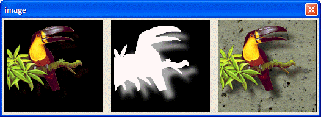

BITMAP_ALPHA()
Syntax
BITMAP_ALPHA( Bitmap_Name as C, X_Coord as N, Y_Coord as N, Alpha_Bitmap_Name as C )
Argument | Description |
Bitmap_Name | The name of the bitmap to modify. |
X_Coord | The horizontal coordinate of the upper left corner of the bitmap. |
Y_Coord | The vertical coordinate of the upper left corner of the bitmap. |
Alpha_Bitmap_Name | The name of the bitmap to use as the alpha channel. A pixel value of 0 is completely transparent. A pixel value of 255 is completely opaque. Intermediate values represent degrees of transparency. |
Description
BITMAP_ALPHA() sets the transparency of each of the pixels in a bitmap according to the values of the corresponding pixels in an alpha channel bitmap, then draws the result.
Limitations
Used only in the Code sections of UI_BITMAP_DRAW(), UI_SCREEN_DRAW(), and UI_PRINTER_DRAW().
Example
Get the original color image, then extract the color data and the alpha channel data.
png_data = file.to_blob("c:\documents\Xbasic Reference\Images\toucan.png") rgb_data = png_to_bitmap(png_data, "R") trans_data = png_to_bitmap(png_data, "A") |
Create two bitmaps from the color data and the alpha channel data.
ui_bitmap_load("rgb", rgb_data) ui_bitmap_load("trans", trans_data) |
Calculate the positions of the three images.
pixsize = ui_bitmap_info_get(rgb_data, "w,h") xpix = val( word(pixsize, 1, ",") ) ypix = val( word(pixsize, 2, ",") ) xperin = ui_info(4) yperin = ui_info(5) width = xpix/xperin height = ypix/yperin |
Combine the three images.
ui_bitmap_create("combine", width, height) stone_data = file.to_blob("C:\WINDOWS\Greenstone.bmp") ui_bitmap_load("Stone", stone_data) ui_bitmap_draw("combine", <<%code% bitmap("stone", 0, 0) bitmap_alpha("rgb", 0, 0, "trans") %code%) |
Display the three images.

ui_dlg_box("image", <<%dlg% {image=rgb} {image=trans} {image=combine} %dlg%) |
See Also